RELION¶
简介¶
RELION 是由 MRC 的 Scheres 在 2012 年发布的针对单颗粒冷冻电镜图片进行处理的框架。
可用的版本¶
版本 |
平台 |
构建方式 |
模块名 |
|---|---|---|---|
4.0.0 |
容器 |
relion/4.0.0 思源一号 |
|
3.1.3 |
Spack |
relion/3.1.3-gcc-11.2.0-cuda-openmpi 思源一号 |
|
4.0.0 |
容器 |
relion/4.0.0 |
|
3.0.8 |
容器 |
relion/3.0.8 |
|
3.1.3 |
Spack |
relion/3.1.3-gcc-8.3.0-openmpi |
|
3.0.8 |
Spack |
relion/3.0.8-gcc-8.3.0-openmpi |
算例下载¶
wget ftp://ftp.mrc-lmb.cam.ac.uk/pub/scheres/relion30_tutorial_data.tar
tar -xf relion30_tutorial_data.tar
# 目录结构
relion30_tutorial
└── Movies
├── 20170629_000XX_frameImage.tiff
├── gain.mrc
└── NOTES
运行示例¶
以下主要介绍RELION可视化的运行方式。用超算的账号及密码登录 HPC Studio ，申请GPU远程桌面或直接打开RELION。
Tip
*-pi 为 π 集群的资源，*-sy为思源一号的资源。
思源一号集群 RELION¶
加载运行RELION¶
进入远程桌面，打开终端 Terminal。
cd relion30_tutorial
module load relion/4.0.0
relion &
预处理¶
建立项目¶
用
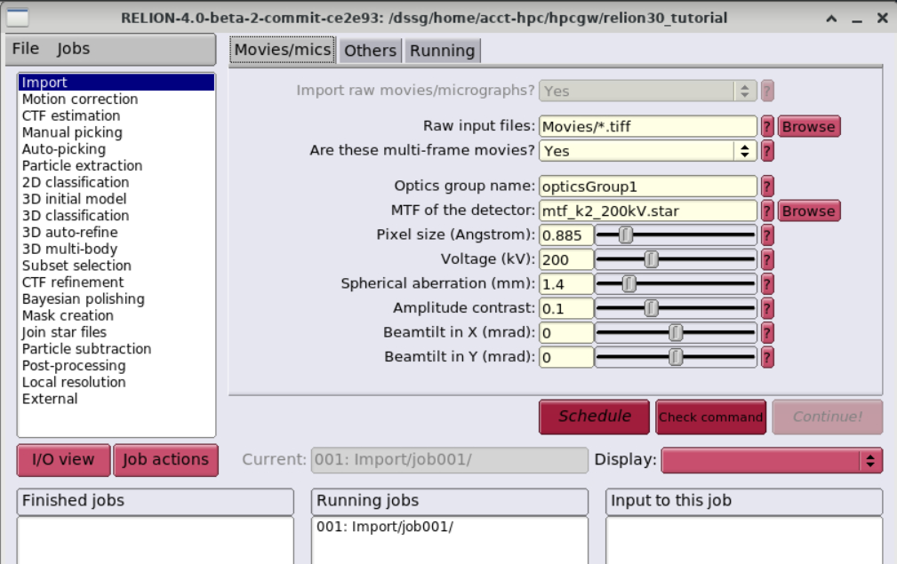Import将数据导入流水线，Movies/mics功能区参数如下：确保
Others功能区是如下设置：Import other node types? |
No点击
Run!运行。此时会创建
Import/job001/目录，及STAR文件，可以在终端通过less Import/job001/movies.star查看。
{kind=link}
运动校正 (Beam-induced motion correction)¶
由于电子光束穿过薄样品，会对样品产生损耗并使其产生轻微位移，需要对每张图像进行运动校正，使图像的拍摄中心一致。
用
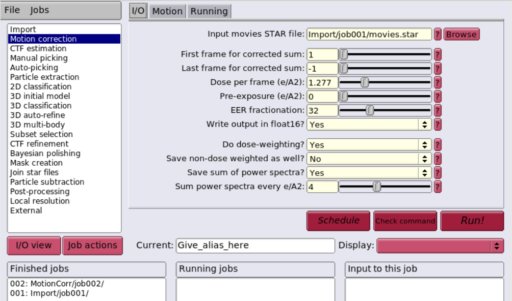 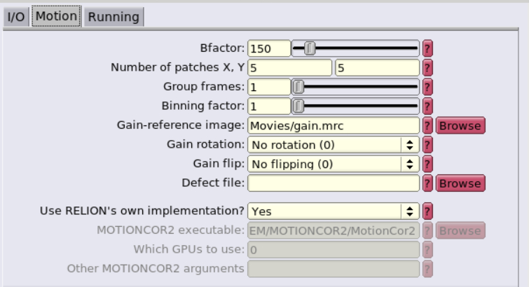Motion correction进行运动校正，I/O及Motion设置如下：设置
Running，点击Run!运行。Number of MPI procs: |
1Number of threads: |
12Submit to queue? |
No
{kind=link}
{kind=link}
衬度转换函数估计 (CTF estimation)¶
由于电镜本身的成像过程，会存在球差、离焦量等问题，需要对其进行分析，找出CFT，对图像进行校正。
用
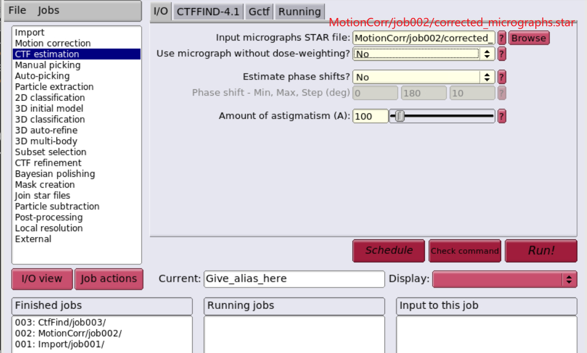 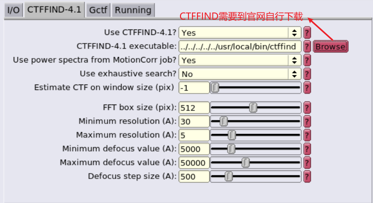CTF estimation进行运动校正，I/O及CTFFIND-4.1设置如下：设置
Running，点击Run!运行。Number of MPI procs: |
4
{kind=link}
{kind=link}
颗粒挑选¶
初始图像集合 (Subset of the micrographs)¶
{kind=link}
{kind=link}
基于拉普拉斯-高斯算子的颗粒自动挑选 (LoG-based auto-picking)¶
{kind=link}
{kind=link}
{kind=link}
颗粒提取 (particle extraction)¶
用
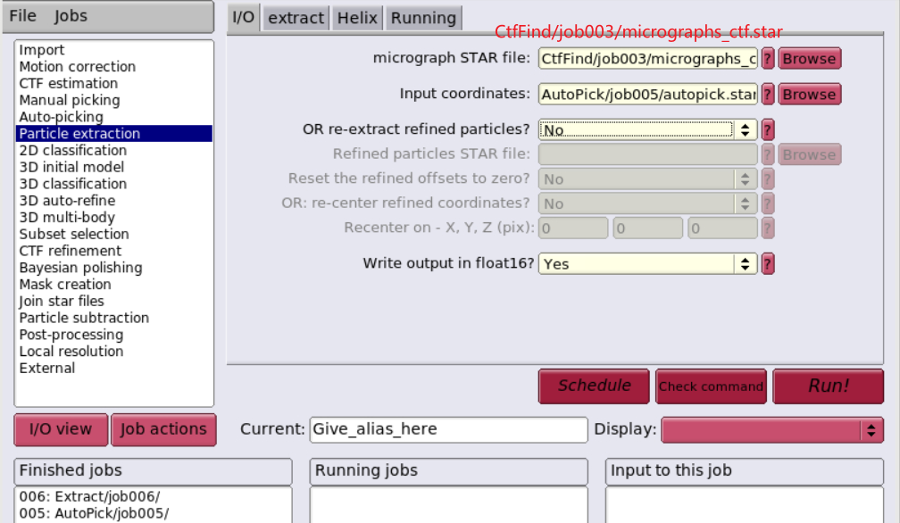 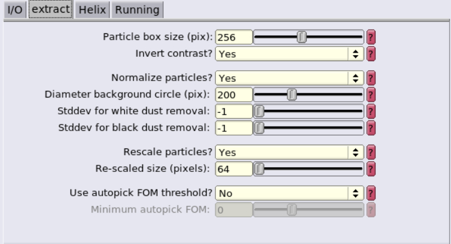Particle extraction提取颗粒，设置如下：点击
Run!运行；选中运行完的job，
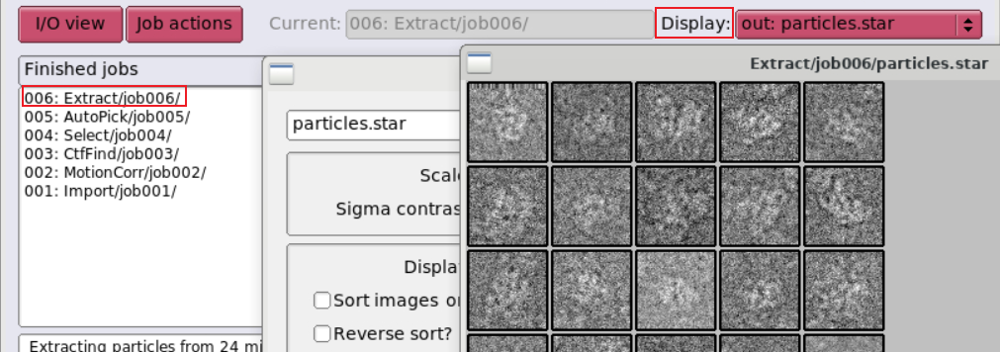Display设置为particles.star，查看颗粒提取结果。
{kind=link}
{kind=link}
{kind=link}
制作自动挑选的模板 (2D class averaging)¶
用
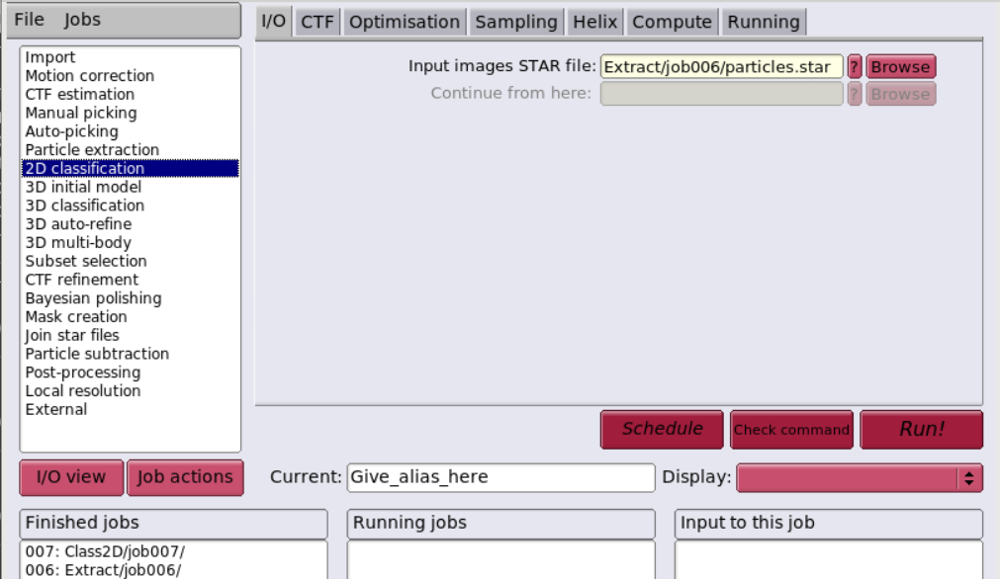 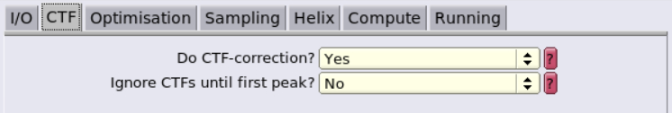 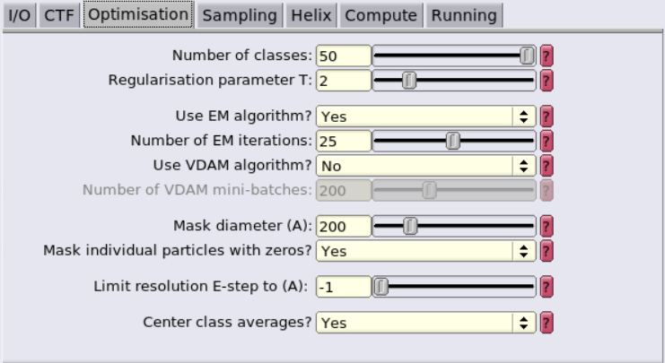 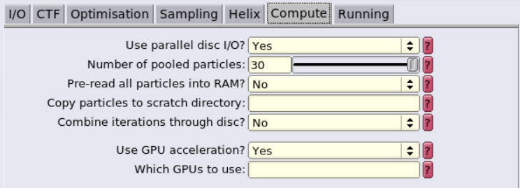2D classification为接下来对所有图像进行自动挑选计算出一个模板，设置如下：设置
Running，点击Run!运行；Number of MPI procs: |
3Number of threads: |
4Submit to queue? |
No选中运行完的job，
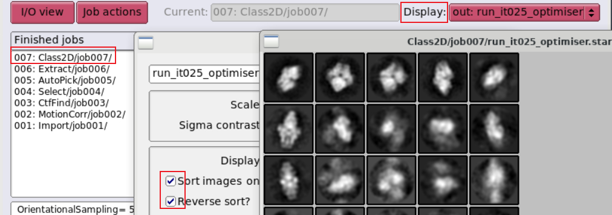Display设置为run_it025_optimiser.star，查看颗粒的模板。
{kind=link}
{kind=link}
{kind=link}
{kind=link}
{kind=link}
π 集群 Relion¶
命令行运行方式¶
以下简单介绍非GUI的运行方式。
module av relion # 查看 π 集群上已编译的Relion
# 调用Relion及相关依赖
module load relion/3.1.3-gcc-8.3.0-openmpi
module load ghostscript/9.54.0-gcc-8.3.0 # 用于输出pdf
module load openmpi/4.1.1-gcc-9.3.0
module load cuda/10.2.89-intel-19.0.4 # 用于支持GPU
GPU队列作业提交¶
在 dgx2 队列上使用 1 块 GPU，并配比 6 CPU 核心。
#!/bin/bash
#SBATCH -J test
#SBATCH -p dgx2
#SBATCH -o %j.out
#SBATCH -e %j.err
#SBATCH -N 1
#SBATCH --ntasks-per-node=6
#SBATCH --cpus-per-task=1
#SBATCH --gres=gpu:1
module load relion/3.1.3-gcc-8.3.0-openmpi
srun --mpi=pmi2 relion_refine_mpi (+params)
使用以下命令提交作业。
sbatch test.slurm
其它：作业模板设置¶
cpu队列 small_slurm.bash¶
#!/bin/bash
#SBATCH --partition=small
# set the job name
#SBATCH --job-name=relion_job
# send output to
#SBATCH --output=XXXoutfileXXX
#SBATCH --error=XXXerrfileXXX
# this job requests x nodes
#SBATCH --nodes=1
# this job requests x tasks per node
#SBATCH --ntasks-per-node=XXXmpinodesXXX
#SBATCH --export=ALL
#paste the "print command" from relion here
mpirun -n XXXmpinodesXXX --mca mpi_cuda_support 0 XXXcommandXXX
gpu队列 xGPU_slurm.bash¶
#!/bin/bash
#SBATCH --partition=dgx2
# set the job name
#SBATCH --job-name=relion_job
# send output to
#SBATCH --output=XXXoutfileXXX
#SBATCH --error=XXXerrfileXXX
# this job requests x nodes
#SBATCH --nodes=1
# this job requests x tasks per node
#SBATCH --ntasks-per-node=XXXmpinodesXXX
#SBATCH --cpus-per-task=6
#SBATCH --time=48:00:00
#SBATCH --gres=gpu:4
#SBATCH --export=ALL
#paste the "print command" from relion here
mpirun -n XXXmpinodesXXX XXXcommandXXX
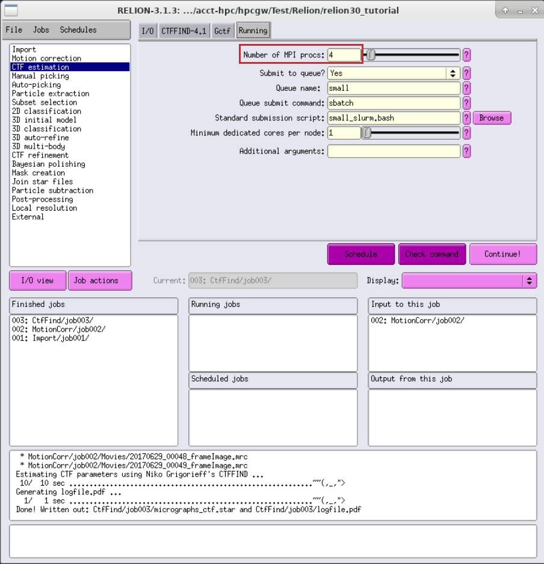